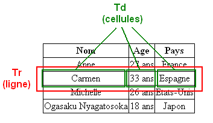

La première balise à connaître est <table> </table>. Cette balise qui permet d'indiquer le début et la fin d'un tableau. Cette balise est de type bloc, il faut donc la placer en dehors d'un paragraphe.
les autres balises à connaître sont :
Schématiquement, un tableau se construit comme sur la figure suivante.

pour les en-têtes et les pieds de tableau on utilise les deux balises suivantes :
Pour fusionner des cellulles il y'a les deux attributs selon le sens de fusion :
l'utilisation est la suivante :
pour ajouter une légende à un tableau il faut utiliser la balise <caption> la légende </caption>.
enfin la balise colgroup qui définit un groupe de colonnes au sein d'un tableau. Pour cette balise on a exploré l'attribut span qui est un entier positif indiquant le nombre de colonnes consécutives sur lesquelles appliquer les attributs de l'élément. S'il est absent, sa valeur par défaut est 1.
Enfin voilà un exemple de tableau :
| en-tête 1 | en-tête 2 | en-tête 3 |
|---|---|---|
| 1 1 | 1 2 | 1 3 |
| 2 1 | 2 2 | 2 3 |
| 3 1 | 3 2 | 3 3 |
| 4 1 | 4 2 | 4 3 |
| 5 1 | 5 2 | 5 3 |
| 6 1 | 6 2 et 6 3 ! | |
| pied 1 | pied 2 | pied 3 |
© Copyright 2017